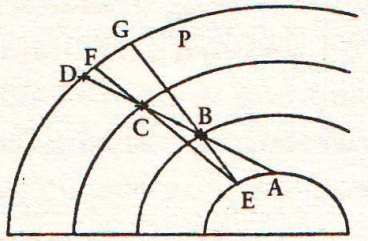

Sagredo – Şu bizim Yerküre’nin yıllık dönme hareketi hakkındaki fikirlerin yeniliğini duymak arzusuyla siz saygıdeğer dostumu büyük bir istekle beklemek, dün geceki saatleri bana hiç geçmeyen vakitlere dönüştürdü. Bu sabah da öyle oldu ve bekleyiş saatleri bana çok uzun geldi. Gerçi vakti boşuna ve tembelce harcamış değilim, bilakis, o saatlerin büyük bir bölümünü, dünkü konuşmaları ve muhakemeleri zihnimden yeniden geçirerek, birbirine zıt olan görüşleri öne süren tarafların, Aristoteles ile Batlamyus bir yanda, Aristarkhos ile Copernicus öbür yanda olmak üzere, bu iki tarafın gerekçeleri üzerinde düşündüm. Gerçekten bana öyle geliyor ki öne sürülen bu iki teori üzerinde hangisi yanılmışsa, onları aldanmaya sevk eden gerekçeler görünürde öyle inandırıcı ki affa sığınabilirler. Bu itibarla biz, bu fikirlerin ünlü ilk sahipleri üstünde dursak iyi ederiz: Ne var ki peripatetikçi görüş ta eski çağlardan beri çok sayıda mürit ve taraftar bulmuştur; oysa diğer görüş karanlıkta kaldı ve ortaya yeni çıktı. Eski görüşün taraftarları arasında, özellikle günümüzdeki taraftarları arasında öylelerini görüyorum ki doğru sandıkları bu görüşü savunmak için yalnızca çocukça değil gülünç gerekçeler öne sürüyorlar.
Salviati – Benim başıma da aynı şeyler geldi ve siz saygıdeğer dostumunkinden fazlası; nitekim ben öylesi fikirler öne sürüldüğüne tanık oldum ki bunları tekrarlamaya utanırım. Bunları bu fikirlerin sahiplerinin ününe zarar vermemek için açıklamıyor değilim: İsimlerini gizli tutarak fikirleri açıklamak her zaman mümkündür ama insan türünün haysiyet ve şerefini alçaltmamak için açıklamıyorum. Ben bunları inceledim ve şu sonuca vardım, bazı insanlar var ki bunlar peşin hükümlüdür: Önce zihinlerinde sonucu saptıyorlar ve bu sonucu, ya kendilerine ait bir fikir olduğu için ya da ün kazanmış bir kişiye ait fikir olduğundan zihinlerinden artık hiçbir zaman söküp atamıyorsunuz. Ve saptadıkları bu fikre teyit olarak kendi akıllarına gelen ya da başkalarından edinilmiş gerekçelere, bu gerekçeler pek basit ve süfli de olsa hemen sarılıyorlar, alkışlıyorlar. Kendi düşüncelerine karşıt düşünceleri, bunlar akıllıca işlenmiş fikirler de olsa kabul etmiyorlar; kızarak ve hor görerek karşılıyorlar ve bunlar arasında bazıları var ki kızgınlığın etkisiyle rakibini susturmak ve sesini boğmak için her türlü entrika mekanizması kurmaya girişmekten geri duramıyorlar; benim başımdan böylesi[120] bazı olaylar geçti de.
Sagredo – Demek ki böyleleri, sonuca, tasımlamanın verilerine dayanarak değil de önceden saptadıkları ve zihinlerine mıhladıkları fikir kalıplarına önverileri ve gerekçeleri uydurarak varıyorlar, daha doğrusu önverilerin ve gerekçelerin düzenini bozarak kalıba döküyorlar. Böyleleriyle fazla haşır neşir olmamak gerekir ve özellikle de girişimleri yalnızca tatsızlık değil tehlike de getirenlerden uzak durmalı. Bu arada biz Bay Simplicio ile sohbetlerimize devam edelim; içtenlikle konuşan ve kötü niyeti olmayan bir insan olarak tanıdık onu uzun süredir. Ayrıca peripatetik doktrini iyice özümsemiş olduğundan Aristoteles’e arka çıkmak için öyle şeyler öne sürüyor ki onun aklına gelmeyen bir şeyin başkasının aklına kolay kolay gelemeyeceğini biliyoruz. İşte, geliyor nefes nefese. Bugün bizi epey bekletti doğrusu. Tam da sizi çekiştiriyorduk ki lafın üstüne geldiniz.
Simplicio – Beni suçlamayın, kabahati Denizler Tanrısı Neptün’de arayın benim bu uzun gecikmemden ötürü; çünkü bu sabah suların çekilmesi yüzünden beni buraya getiren gondol, kanallardan birine, altyapısı tamamlanmamış bir kanala girince oracıkta çakılı kaldık; deniz sularının geri gelmesi için tam bir saat bekledik. Burada sandaldan inemeyince ve sandal da neredeyse birden kuma oturuverince beni epey hayrette bırakan bir gözlemde bulundum: Çekilen suların küçücük su yolları açarak hızla kaçıştığına tanık oldum ve yer yer de çamurlu görünüyorlardı. Ben suların hızla kaçıştığını gözlerken bu hareketin birden duraladığını fark ettim ve çekilmesiyle geri gelmesi arasında hiç zaman çizgisi olmamacasına sular geri gelmeye başladı. Hiç ara vermeden yeniden geri gelmişti. Venedik’te kaldığım zamanlar boyunca hiç böyle bir şeye tanık olmamıştım.
Sagredo – Demek, başınıza pek gelmemişti suların birden çekilmesine tanıklık etmek; çok az eğimli zeminde olduklarından, açık denizde yalnızca bir kâğıt yaprağı inceliğinde su alçalması ya da yükselmesi buralarda suyun epey uzun mesafeler boyunca çekilmesine, ardından da geri gelmesine neden olabiliyor; tıpkı bazı sahillerde denizin 4 ya da 6 arşın yükselmesi üzerine ovaların yüzlerce ve binlerce mil su altında kalmasına neden oluşu gibi.
Simplicio – Evet, söylediklerinizi anlıyorum ama sanıyordum ki alçalmanın son noktası ile yükselmenin ilk noktası arasında bir ara, fark edilebilecek kadar bir durgunluk olur.
Sagredo – Gelgit olgusunun etkisini dikey ölçüt olarak gösteren duvar ya da suya çakılmış kazıkları gözlerseniz fark edersiniz; durağanlık hali gibi bir aralık yoktur.
Simplicio – Bu iki hareket birbirinin zıddı olduklarından aralarında bir durağanlık süresi olur sanıyordum. Aristoteles’in işaret ettiği gibi; geri dönme noktasında bir durağanlık anı vardır diye bir sözü vardır.
Sagredo – Bu sözün nerede geçtiğini çok iyi hatırlıyorum ama şunu da iyice hatırlıyorum ki felsefe okurken Aristoteles’in ispat yolları beni ikna edememişti, hatta tamamen tersi deneyimlerle karşılaşmıştım. Bunları size şimdi aktarabilirim ama içinden çıkılmaz yollara dalmayalım; çünkü kendi konularımızı ele almak üzere buluştuk ve mümkünse konuşmaları kesmeden sürdürelim görüşmelerimizi geçtiğimiz günlerdeki gibi...
Simplicio – Ama yine de olacak kesintiler; lafı kesmek için değil de toparlamak için, çünkü dün gece eve döndüğümde Tezler Kitabı’nı yeniden gözden geçirdim ve bu kitapta Yerküre’ye yakıştırılan şu yıllık dönme hareketine karşı çıkan epey ikna edici kanıtlara rastladım; bunları sizlere harfi harfine tekrarlayamazsam diye kitabı yanımda getirdim.
Sagredo – İyi ettiniz ama dün kararlaştırdığımız konuyu ele almak gerekirse önce Bay Salviati’nin gökyüzünde yeni zuhur eden yıldızlar hakkında neler söyleyeceğine kulak verelim, sonra da kesintiler olmazsa yıllık hareket konusunu ele alırız. Şimdi, bakalım Bay Salviati ne diyecek bu yıldızlar hakkında? Onlar, gerçekten Bay Simplicio’nun öne sürdüğü yazarın yanlış hesaplamaları yüzünden mi gökyüzünün derinliklerinden aşağı bölgelere nakledildiler acaba?
Salviati – Ben dün gece bu yazarın hesaplamalarına baktım; bu sabah yeniden gözden geçirdim, acaba dün gece okuduklarım gerçekten kitapta yazılı mı yoksa benim hayal gücümün uydurduğu şeyler mi diye. Sonuçta bu yazarın itibarı açısından keşke bunlar yazılmamış ve yayınlanmamış olsaydı diye hayıflandım onun için üzülerek. Yazarın, bu yazılarla nafile bir iş peşinde koştuğunu bilmemesi imkânsız, çünkü çok aşikâr bir durum söz konusu, bir de şu var ki bizim akademi üyesi dostumuzun övgüsüne mazhar olmuş biri. Ayrıca beni üzen bir şey de aklı başında insanların yergiden başka bir tepki vermeyecekleri bir eseri bizim akademisyenin tanıtmaya kalkışacak kadar kendi ününü harcamasıdır[121], bu da inanılması zor bir şey gerçekten.
Sagredo – Buna bir de şu durumu ekleyin: Yaşayan ya da eğer varsa yaşamış olan büyük akılların yanında onu övecek ve yücelteceklerin sayısı yüzde birden de az olacaktır. Öyle biri ki gökyüzünün değişmezliğine ilişkin peripatetikçi görüşü bir yığın astronoma karşı savunabilmiş, hem de onları kendi silahlarıyla vurmuş biri. Eserin hafifliklerini fark eden üç beş kişi, bu hafiflikleri sezemeyen ve anlamadıkları oranda daha fazla alkışlayan kalabalık çoğunluğa karşı ne yapabilir ki? Ayrıca bu işten anlayanlar da böylesine basit ve hiçbir sonuca bağlanamayan yazılara cevap vermeye tenezzül etmeyeceklerdir. Zaten anlayanların üstünde durmaması gerekir, anlamayanların da boşa vakit harcayacakları bilinir.
Salviati – Aslında en ölçülü ceza bu konuda susmak olur, eğer kızmayı gerektiren başka nedenler olmasa... Bu nedenlerden biri, biz İtalyanlar’ın, Alpler ötesi toplumların ve özellikle de bizim dinimizden ayrılmış bulunanların bize cahil gözüyle bakmalarına müsaade etmemizdir; ben size bu toplumların ileri gelen kişileri arasından öyle isimler verebilirim ki bunlar, ülkemizdeki astronomlara aldırmadan budalaca şeyler yazmış olan Lorenzini adında birinin böyle bir kitap çıkarması[122] karşısında susan bizim akademi üyesi ve birçok matematikçimizle dalga geçiyorlar. Daha büyük alay konusuyla karşılaştırınca bu yine de yenir yutulur cinsten sayılır: Ya anlayamadıkları doktrinlere muhalefet eden bu gibi kişilere karşı aydın kişilerin takındıkları riyakârca tavırlara ne demeli?
Sagredo – Doğrusu ya, ben bu gibilerin riyakârlıklarına dair ve Copernicus’un talihsizliğine ait başka bir söz daha işitmek istemiyorum. Sorunun temel noktasını bile anlamadan Copernicus’u hedef alıp ona karşı neredeyse savaş açmış durumdalar.
Salviati – Gökyüzünde yeni zuhur eden iki yıldıza gezegenlerin ötesinde yükseklik tanıyanlara ve hele yıldızlı kürede onlara yer tanıyan astronomlara karşı çıkmalarını duysanız şaşkınlığınız daha da artardı.
Sagredo – Peki siz böylesine kalın bir kitabı bu kadar kısa bir sürede nasıl inceleyebildiniz? Hem de epey sayıda ispatlamalar var.
Salviati – Ben yazarın ilk itirazları üzerine incelememi durdurdum; çünkü 12 astronomun gözlemlerine dayanan gösterimlerde 1572 tarihli yeni yıldızın Koltuk takımyıldızında görüldüğü belirtiliyor. Bu nedenle yeni zuhur eden yıldızın gökyüzünde Ay’ın alt bölümlerinde değil, üst bölümlerinde yani yıldızlı kürede olduğu kabul görüyor; oysa yazar, yeni yıldızı Ay’ın berisinde kabul ediyor ve ispatlamaya bu yönde girişiyor. Böyle bir ispatlamayı başarabilmek için değişik gözlemcilerin ayrı ayrı enlemlerdeki yeni yıldıza ait aldıkları meridyen yüksekliklerini karşılaştırıyor. Bu karşılaştırmayı ne biçim yaptığını az sonra anlattığımda göreceksiniz: Bu yazarın henüz ilk karşılaştırmaları, astronomlar aleyhine bir şey bulamadığı gibi peripatetikçi filozoflar lehine de bir şey bulamadığını ve onların buldukları sonuçları daha etraflıca teyit etmekten başka bir şey yapmadığını ortaya koyuyor. Sabırla hepsini gözden geçirme isteği duymadım, nasıl olsa bu ilk aşamadaki çıkışlarının başarısızlığı diğerlerinde de aynen devam edecek diye; şöylesine bir göz atmakla yetindim. Göreceğiniz gibi çok titiz ve çok tantanalı hesaplar üzerine kurulu bu eseri yadsımak için yalnızca birkaç kelime yetecektir. Şimdi benim nasıl bir incelemeden geçirdiğimi anlatayım. Bu yazar, dediğim gibi, muhaliflerini kendi silahlarıyla vurmak istiyor; epeyce gözlem yapan astronomların, ki bunların sayısı 12 ya da 13’tür, gözlemlerini alıyor ve onlara dayanarak hesaplar ortaya döküyor. Hesapların sonucuna göre yazar, sözünü ettiğimiz iki yıldızın Ay kubbesi berisinde göründüğünü iddia ediyor. Doğrusu ya, soru cevap şeklinde ilerleyişimiz hoşuma gittiğinden ve yazarın kendisi de karşımızda bulunmadığına göre Bay Simplicio cevap versin istiyorum sorulara, yazarın kendisi cevap veriyormuşçasına. Konumuz olan 1572 tarihinde zuhur etmiş Koltuk takımyıldızında görülmüş yeni yıldız hakkında size şunu soruyorum: Söyleyin Bay Simplicio, yıldız aynı anda birçok yerde bulunabilir mi yani elementsel cisimler arasında bulunuyorsa aynı zamanda gezegenlerin yörüngelerinde bulunabilir mi ve hatta gezegenlerle sabit yıdızlar arası bölgede bulunabilir mi ve hatta sonsuz denecek kadar daha yükseklerde olabilir mi?
Simplicio – Hiç şüphesiz bu sorunun cevabı yıldızın yalnızca tek bir yerde görülebileceği ve bunun Yerküre’mizden belirli mesafede ve bir tek yerde olacağıdır.
Salviati – Demek ki astronomlar tarafından yapılan gözlemler doğruysa ve bu yazar tarafından yapılan hesaplar da yanlış değilse onlarınkinden ve yazarınkinden toplanan bilgilerin yıldızın uzaklığını hep aynı vermesi gerekir, öyle değil mi?
Simplicio – Tamam, şu ana kadar muhakemem böyle olması gerektiğini söylüyor; herhalde yazarın kendisi de bu dediğime karşı çıkmazdı.
Salviati – Peki, yapılmış birçok ve birçok hesaptan birbirine uyan iki tane bile bulamazsanız, nasıl bir hükme varırsınız?
Simplicio – Hepsinin de hatalı olduğuna karar verirdim ya hesaplayanın ya da gözlemcilerin yanlışından derdim; en çok söylenebilecek şey, bunlardan yalnızca birinin doğru olduğunu söylemek ama hangisini seçmem gerektiğini bilemem.
Salviati – Bu durumda siz yanlış temelleri dayanak yapıp şüpheli bir hükme mi varmak isterdiniz? Elbette hayır. Şimdi şunu söyleyeyim ki bu yazarın hesapları öyle ki hiçbiri birbirini tutmuyor; ne derece güven duyabileceğimizi siz hesaplayın artık.
Simplicio – Doğrusu şu ki eğer durum böyleyse bu önemli bir eksikliktir.
Sagredo – Bay Simplicio’ya da yazara da yardımcı olmak üzere Bay Salviati’ye şunu diyeyim ki onun amacına ulaşması, yıldızın Yerküre’den uzaklığının ne kadar olduğunu öğrenmeye ancak niyeti olması halinde gerçekleşebilirdi; sanmıyorum ki yazarın niyeti bu olsun. Onun niyeti o gözlemlerden yıldızın Ay-berisi uzaklığında olduğunu çıkarsamaktır; nitekim sözü edilen gözlemlerden ve bunlara dayanılarak tüm o hesaplardan yıldızın yüksekliğinin hep Ay yüksekliğinin altında bulunduğu çıkarsaması sağlanıyorsa geometri ya da aritmetik bilgisizliği yüzünden kendi gözlemlerinden gerçek sonuçlara varmayı bilemeyen astronomları yazarın cehalet kıskacı içine çekmesine yaramıştır.
Salviati – Ben bu durumda size başvurayım Bay Sagredo, bu yazarın görüşünü yakından kontrol altına alıp onu kinayeli biçimde pohpohladığınıza göre. Hesaplamalarla ispat konularında Bay Simplicio pek uzman değilse de hiç olmazsa o yazarın yanlış kanıtlamalarını kavramış olur. Her şeyden önce şunu dikkatinize sunmak isterim ki bu yazar da astronomlar da yani onun tartışma halinde olduğu astronomlar da yeni yıldızın kendine ait bir muharrik gücü olmadığı noktasında birleşiyorlar ve yalnızca primum mobile’nin sağladığı muharrik güçle günlük dönme hareketini sürdürdüğünü kabul ediyorlar; ne var ki yıldızın bulunduğu bölge hakkında görüş ayrılığı içindeler: Astronomlar yıldıza, ola ki gökyüzü yüksekliklerinde yani Ay-ötesi bölgede yer veriyorlar ve hatta sabit yıldızlara kadar bile yükseltiyorlar; yazarın görüşünde olanlarsa yıldızı yakın bularak Ay kubbesi altında bir yükseklik tanıyorlar. Söz konusu yıldızın gökyüzündeki bölgesi kuzeyde ve Kutupyıldızı’ndan fazla uzakta olmadığından, kuzey ülkelerinde yaşayan bizler için hiç batmıyor durumdaydı. Bu nedenle de yıldızın meridyendeki yüksekliklerini Kutupyıldızı’nın ister altındaki asgari yükseklikleri ister daha yukarıdaki azami yükseklikleri astronomi aygıtlarıyla ölçmek kolaydır. Yerküre’nin kuzeyinden başlayarak kuzeye çeşitli mesafelerdeki yerlerden alınmış, çeşitli mesafelerden alınınca Kutupyıldızı’na karşı elbet aralarında farklar olan çeşitli yüksekliklerin bir araya getirilmesiyle yeni yıldızın uzaklığı tartışmaya açılabilirdi. Böylece yeni yıldız, şayet Ay-berisi yakınlıklarda değil de Ay-ötesi uzaklıklardaki sabit yıldızlar arasında idiyse Kutupyıldızı’na göre alınmış çeşitli meridyen yüksekliklerinin birbirleri arasında farklı olmaları gerekirdi, ölçüm yerleri arasındaki aynı farklara uygun olarak. Şöyle ki yeni yıldızın ufukta yüksekliği eğer 30 derece ise Kutupyıldızı 45 derece iken, yeni yıldızın yüksekliği, Kutupyıldızı’nın kuzey ülkelerinde 4-5 derece fazla olan yüksekliğine aynı 4-5 derece yükseklikle eş olmalıydı. Fakat yıldızın Yerküre’mizden uzaklığı gökyüzünün derinliği gibi fazla bir uzaklık değil de Ay-berisi gibi pek az bir uzaklıktaysa onun meridyen yüksekliklerinin, biz kuzeye yaklaştıkça Kutupyıldızı yüksekliklerine kıyasla daha fazla artış göstermesi gerekir. Bu daha fazla artış yani yıldızın Kutupyıldızı yüksekliğinin artışına kıyasla çok daha fazla artışından, ki buna paralaks farkı denir, çabucak, açık seçik ve emin olarak yıldızın Yerküre’miz merkezinden uzaklığı hesaplanır. Bu yazar Kutupyıldızı’nın çeşitli yüksekliklerini on üç astronomun gözlemlerinden işine yarayanlarını ele alıp bunlardan kırıntı denecek bir kısmını 12 bulgu çiftleşmesiyle inceleyerek yeni yıldızın hep Ay-berisi bir yüksekliğe sahip olduğunu söylüyor. Fakat bunu yaparken kendi kitabını eline geçirebilecek okurları öylesine cahil sanarak yapıyor ki ben okurken tiksindim ve bekliyorum diğer astronomlardan ve özellikle bu yazarın zehir zemberek eleştirdiği Kepler’den bir tepki gelecek mi diye ve hiç tepki gelmeyişine şaşıyorum. Kepler dilini yutmuş olamaz; belki de bu sorunu cevaplanmayacak kadar değersiz bulmuş olabilir. Ben sizi bilgilendirmek üzere şu kâğıda yazarın 12 gözlemden toparladığı sonuçları aktarıyorum. Bunlardan ilki, iki gözleme aittir.
| 1. Maurolico ve Hainzelio’nun gözlemlerinden, yıldızın, merkezden Yerküre’nin 3 yarıçapından az uzaklıkta olduğu bilgisi alınıyor ve paralaks fark 4˚ 42’ ve 30’’ .............................................................. | 3 yarıçap. |
| 2. Hainzelio ve Schulero’nun gözlemlerinden derlendi, paralaks 8’ 30’’; merkezden uzaklığına ait bilgi ................................................ | 25 yarıçaptan fazla. |
| 3. Tycho’nun ve Hainzelio’nun gözlemlerine dayalı olarak paralaks 10’, merkezden uzaklığına ilişkin bilgi .......................................... | 19 yarıçaptan biraz az. |
| 4. Tycho ve Landgravio’nun gözlemleri üzerine paralaks 14’; merkezden uzaklığı yaklaşık................................................... | 10 yarıçap. |
| 5. Hainzelio ve Gemma’nın gözlemleri üzerine paralaks 42’ ve 30’’; uzaklığı yaklaşık........................................................ | 4 yarıçap. |
| 6. Landgravio ve Camerario’nun gözlemleri üzerine, paralaks 08’ uzaklığı yaklaşık .................................................. | 4 yarıçap. |
| 7. Ticone’nin ve Hagecio’nun gözlemleri üzerine paralaks 06’; uzaklığı ................ | 32 yarıçap. |
| 8. Hagecio’nun ve Ursino’nun gözlemleri, paralaks 43’; Yerküre’nin yüzeyinden itibaren uzaklık .......................................... | 1/2 yarıçap. |
| 9. Landgravio ve Buschio’nun gözlemleri üzerine, paralaks 15’; Yerküre yüzeyinden itibaren uzaklık ................................ | 1/48 yarıçap. |
| 10. Maurolico ve Munosio’nun gözlemleri üzerine paralaks 4˚ 30’; Yerküre yüzeyinden itibaren uzaklık ................................ | 1/5 yarıçap. |
| 11. Munosio ve Gemma’nın gözlemleri, paralaks 55’; Yerküre merkezinden uzaklık yaklaşık .................................................. | 13 yarıçap |
| 12. Munosio ve Ursino’nun gözlemleri paralaks 1˚ 36’; merkezden uzaklık ............... | 7 yarıçap |
Bunlar yazar tarafından kendi seçimiyle ele aldığı 12 adet incelemedir; yazarın kendi ifadesine göre 13 astronom tarafından yapılmış ve aralarında eşleştirmeye gidilerek incelenebilecek daha birçokları vardır. Bu 12 adet incelemenin, yazarın kendi amacına en uygun olanları olarak seçildiği anlaşılıyor.
Sagredo – Ben şunu öğrenmek istiyorum, acaba yazarın aktarmadığı diğer incelemeler arasında yeni yıldızı Ay-ötesi bölgelerde gösteren vardı da yazar bunları kendi görüşüne ters düşüyor diye buraya aktarmadı mı? Ben şöyle bir göz gezdirince böyle bir kuşkuya kapılmakta haklı buluyorum kendimi çünkü yazarın bize sundukları arasında öyleleri var ki yeni yıldızın Yerküre’den uzaklığını biri diğerinden 4, 6, 100 ve 1.000 ve 1.500 kez daha fazla bulguluyor; gözlemlere dayalı hesaplamaların buraya aktarılmamış olanları arasında yazara karşıt cephedekilerin lehine sonuç verenler de olabilir, çünkü gözlemci astronomlar arasında bu çeşit hesaplamaları yapan epey akıllı ve deneyimli kişiler olduğunu sanırım; kaldı ki bu çeşit hesaplamalar da dünyanın en zor işlerinden değildir. Eğer yalnızca bu 12 inceleme arasında yeni yıldızı Yerküre’nin birkaç mil kadar yakınına yerleştirenler olup da Ay’ın pek az altına konduranlar da varsa ve yine bunlar arasında karşı cephenin lehine olmak üzere Ay’ın hiç olmazsa 20 arşıncık üzerinde bulanlar olursa; bütün bunlar benim için hayret uyandıracak harikalar olurdu. Tüm bu astronomların böylesine belirgin hatayı fark etmeyecek kadar kör olmaları da hayret uyandıran ayrı bir şey.
Salviati – Şimdi sizler, başkasına muhalefet etmek ve başkalarından akıllı görünmek arzusuyla insanın kendisini nasıl üstün görüp karşısındakini küçük gördüğüne ilişkin taşkınlıklarını dinlemeye kulaklarınızı hazırlayın. Yazarın ihmal ettiği incelemeler arasında öyleleri var ki yeni yıldızı yalnızca Ay-ötesi yerleşime kavuşturmakla kalmıyor, aynı zamanda sabit yıldızların bile ötesine konduruyorlar; üstelik bu incelemelerin sayısı da az değil hani, şu diğer sayfada göreceğiniz gibi çoğunluktalar.
Sagredo – Peki, ne diyor yazar bunlar hakkında? Acaba hesaba katmadı mı bunları?
Salviati – Ne yazık ki katmış ama hesaplamaların yıldızı sonsuz derecede yükseğe yerleştirmesine meydan veren gözlemlerin hatalı olduklarını ve kendi aralarında mukayeseyle irdelenemediklerini söylüyor.
Simplicio – Bu savunma biraz zayıf kaçmış, çünkü karşı taraf da yıldızı elementsel bölgeye konduranların başvurdukları gerekçeler için yanlış diye iddia öne sürme hakkını kendinde görebilir.
Salviati – Ah Bay Simplicio, bu yazarın hünerlerinden, pek de hüner sayılmaz ya, sizi haberdar etmem mümkün olsa hayretler içinde kalır ve tiksinti duyardınız: Sizin ve sizin gibi saf filozofların sadeliğini örtü olarak kullanıp altına entrikalarını saklıyor ve bunu, kulağınıza hoş gelen sözlerle ihtirasınızı kabartmak suretiyle yapıyor, amacı da göğün değişmezliğine ilişkin tabu fikri alaşağı etmek için yola koyulan cüceleşmiş astronomları kendi silahlarıyla susturmak, onları ikna etmiş ve yaralamış havası vermek. Ben bu konuda elimden gelen tüm gayreti göstererek her şeyi ortaya dökmeye kararlıyım. Bu arada Bay Sagredo kendisini fazlaca söz yığınağıyla rahatsız etmemizden ötürü (fazlaca derken onun süratli zekâsının gerektirmediği kadar fazla sözle demek istedim) beni ve Bay Simplicio’yu bağışlasın, böylece ben de gizli kalmaması, bilinmesi gereken şeyi açıklamaya çalışacağım.
Sagredo – Sıkılmak ne kelime? Ben büyük zevkle dinleyeceğim sizin açıklamalarınızı; keşke tüm peripatetikçi filozoflar gelip dinleseler de değerini anlasalar, ona ne kadar borçlu olduklarını bilseler.
Salviati – Söylesenize Bay Simplicio, yeni yıldız orada, kuzeyde meridyen çemberinde yerleşmiş olduğuna göre, güneyden kuzeye doğru yürüyerek giden biri için yeni yıldızın ufuk üzerinde Kutupyıldızı kadar yükselmiş olacağını idrakta bir zorluk çeker misiniz? Elbet sözünü ettiğim durum eğer yeni yıldız sabit yıldızlar arasındaysa geçerlidir. Fakat yeni yıldız epey alçaktaysa yani yeryüzüne yakınsa bu yıldız elbet Kutupyıldızı’na göre daha büyük miktarda yükselmiş gözükecektir.
Simplicio – Bunu tamamen anladım sanırım; bunun şerefine matematiksel bir grafik çizeyim: Büyük çemberde P harfiyle Kutupyıldızı’nı kaydettim. Daha alttaki iki çember yeryüzündeki bir noktadan, örneğin A noktasından görülen iki yıldızı kaydediyorum, iki yıldızı B ve C harfleriyle gösteriyorum. B ve C yıldızlarını ABC hattı üzerinde, fondaki D harfli sabit yıldız önünde görüyorsunuz. Sonra yeryüzünde A noktasından E noktasına kadar yürüyorum: İki yıldız D noktasından uzaklaşmış ve Kutupyıldızı olan P noktasına yaklaşmış görünecekler. Daha alçaktaki B harfiyle gösterilen yıldız Kutupyıldızı’na daha çok yaklaşmış görünecektir yani G noktasında; oysa diğeri daha az yakın görünecektir Kutupyıldızı’na L harfiyle işaretlendiği üzere. Fakat D harfiyle gösterilen sabit yıldızın P noktasından uzaklığında bir değişiklik görülmeyecektir.

Şekil 17- 1604 yılında gökyüzünde beliren yeni bir yıldızın Ay’ın ötesinde mi berisinde mi olduğu hakkındaki tartışmalara açıklık getirmek için Galileo paralaks yöntemine başvuruyor. Yıldızın görünürdeki yeriyle gerçek yerini ve uzaklığını saptamak için B ve C yıldızlarına yeryüzünün iki ayrı noktası olan A ve E’den çizgiler çekiliyor. Daha alçaktaki B yıldızı Kutupyıldızı P’ye yaklaşmış görünüyor (G noktasına bkz.). Diğer daha yüksekteki yıldız olan C Kutupyıldızı’na yakın görünmüyor. F noktasında yani P’ye (Kutupyıldızı) uzak düşüyor: D noktasındaki bir sabit yıldız yakınlarında görünüyor.
Salviati – Bakıyorum, bu işten pek iyi anlıyorsunuz. Siz şunu da anlıyorsuz ki B yıldızı C yıldızından daha alçakta olduğu için A ve E noktalarından hareket eden vizüel ışınların C noktasında birleşmesiyle oluşan ACE açısı, B noktasında AB ve EB ışınlarının oluşturduğu açıdan daha dardır yani dar açı oluşturmaktadır.
Simplicio – Açık seçik görülüyor.
Salviati – Şu da var ki Yerküre’miz gökyüzünün enginliğine kıyasla çok küçük kaldığından ve neredeyse fark edilmez küçüklükte olduğundan A’dan E noktasına yürüyüş kısacık bir mesafedir EG ve EF çizgilerine kıyasla. Yeryüzünden gökyüzüne çekilen EG ve EF çizgilerinin muazzam uzunluğu şunu anlatıyor ki C yıldızı yeryüzünden o denli uzakta olabilir ki A ve E noktalarından hareket eden vizüel ışınların oluşturduğu açı çok ama çok dar, fark edilemeyecek ve var sayılmayacak derecede olabilir.
Simplicio – Bunu da çok iyi anlayabiliyorum.
Salviati – Şimdi, Bay Simplicio, şunu bilmenizi isterim ki astronomlar ve matematikçiler bu iki açının yani B ve C açılarının miktarından, aralarındaki açı farkından ve A, E noktaları arasındaki mesafe miktarını da işin içine katarak göksel cisimlerin uzaklıkları hakkında yanılgısız sonuçlar elde etmeyi başarmaktadırlar; yeter ki sözünü ettiğimiz mesafeler ve açılar tam ölçülmüş olsun. Bu takdirde sonuç bir adımlık mesafe kadar bile şaşmaz.
Simplicio – Demek oluyor ki geometri ve aritmetiğin gerektirdiği kurallara riayet edilirse yeni yıldızların, kuyrukluyıldızların ya da başkaca gökcisimlerinin yüksekliklerini ölçmedeki hata, AE mesafesinin ve B, C açılarının iyi ölçülmemesinden ileri gelmektedir. Böylece anlaşılıyor ki şu 12 gözlemdeki hatalar, hesaplama kurallarındaki bilgisizlikten ileri gelmiyor ve fakat dediğiniz açıların ve uzaklıkların gözlem gereçleriyle izlenirken yapılan yanlışlıklardan kaynaklanıyor.
Salviati – Evet, öyle ve bunun başka bir zorluğu yok. Şimdi dikkat göstermeniz gereken şey, yıldızın B’den C’ye uzaklaşmasından ötürü açının daraldığıdır ve EBG vizüel ışınının, ABD ışınının alt tarafındaki açı kısmından sürekli uzaklaştığıdır ki ECF zaten bunu ortaya koyuyor. Şöyle ki ECF’nin alt bölümü olan EC çizgisi AC çizgisinden, EB’nin olduğundan daha uzaktır. Fakat herhangi engin bir uzaklık nedeniyle sonuçta, uzaktaki yıldızla kesişmek üzere AD ve EF çizgilerinin birbirinden ayrı düşmesi söz konusu olamaz. Uzaklık sonsuz olarak düşünülürse ancak o takdirde iki çizgi birbirine kavuşmamacasına ayrı düşerler ve birbirlerine paralel olmalılar ki böyle bir şey mümkün değildir. Ne var ki iyice not edilmeye değer olan şey Yerküre’mizin küçüklüğü yanında gökyüzünün uzaklığı, daha önce söylediğimiz gibi muazzam bir enginlik olarak kabul edildiğinden, bu nedenle A, E noktalarından giden ışınların içerdiği açının çizgileri sabit bir yıldızda son bulacak olsalar açı sıfır derece olarak kabul edilir; çizgiler de birbirine paralel kabul edilirler ki ancak o zaman yeni yıldızın gökyüzü enginliğindeki bir uzaklıkta olduğu söylenebilsin. Bu nedenledir ki yeryüzünün değişik yerlerinden yapılan gözlemlere ait bilgiler birbiriyle karşılaştırılarak söz konusu açının sıfır dereceye yakın ve çizgilerin de paralel olduğu durumu ortaya çıkarsa o takdirde yeni yıldızın sabit yıldızlar uzaklığında olduğu açıklanabilir. Fakat açı epey büyük olursa yeni yıldızın sabit yıldızlardan mecburen daha alçak olması gerekir ve hatta Ay’dan bile daha alçakta olabilir: Elbet AEB açısı Ay’ın merkezi itibariyle oluşturulacak açıdan daha geniş olursa.
Simplicio – Demek ki Ay, fark edilemeyecek gibi dar bir açı oluşturacak uzaklıkta değil, öyle mi?
Salviati – Evet, uzak değil; yalnızca Ay değil Güneş’in uzaklığı bile fark edilemeyecek kadar dar bir açı oluşturmaz.
Simplicio – Eğer durum böyle ise yeni yıldızın, Güneş’ten alçak olmasına gerek kalmadan da Ay’dan elbet haydi haydi fark edilebilecek gibi bir açı oluşturması mümkün mü?
Salviati – Böyle bir şey mümkün ve bizim ele aldığımız durumlar için de söz konusu olabilir: Bunu yeri gelince görürsünüz. Yeri gelince dediğim, yazarın gerçeği arayıp bulmak için her şeyi içtenlikle söyleyeceği yerde, peripatetikçilerin hoşuna gitsin diye birçok şeyi gizlemiş olduğunu siz, astronomi hesaplarında pek de yetenekli olmamanıza rağmen elle tutulur gözle görülür olarak bu dikenli yolu temizlediğimde görebileceksiniz demek istedim. Şimdi yolumuza devam edelim. Buraya kadar yaptığımız açıklamalardan şunu anlamakta gecikmemişsinizdir: Yeni yıldızın uzaklığı, sözünü ettiğimiz açı ortadan ayrılacak ve gözlemcilerin vizüel iki ışın çizgisi paralel olacak kadar fazla engin olamaz; yapılan gözlemlere dayalı hesaplamalar o açının tamamen yok olduğunu ve çizgilerin de gerçekten paralel çizgilere dönüştüğünü ortaya koyuyorsa bilmemiz gerekir ki bir yerde hata yapılmıştır. Fakat eğer hesaplamalar, o çizgilerin paralel olacak gibi birbirlerine eşit uzaklıkta olduklarını ortaya koydmaktan başka bu durumu da aşarak üst kısmın aşağı kısımdan daha büyük genişliğe kavuştuğunu gösteriyorsa bu takdirde hata yapıldığı kesindir ve imkânsız bir durumla karşı karşıyayız demektir. Sizin bana inanmanız ve gerçek olarak algılamanız gerekir ki iki doğrunun, bir başka doğru üzerinde işaretlenmiş iki noktadan hareket etmek suretiyle, bu doğru üzerinde oluşturdukları açılar iki dikaçıdan daha büyükse bu çizgiler üst tarafta alt taraftakinden daha geniş demektir; eğer bu iki açı dikaçıysa iki doğru birbirine paraleldir; fakat dikaçıdan küçükseler iki çizgi birbirine girecek gibi uzatılır ve üçgen oluştururlar.
Simplicio – Size güven duymak niye? Ben zaten bilgi sahibiyim bu konuda ve her üçgenin üç açısının iki dikaçıya eşit olduğunu Aristoteles’ten bin defa okumaya fırsatım olduğu için geometriden bu kadar yoksun değilim: Öyle ki ben şekildeki ABE üçgenini alırsam, eğer EA çizgisi bir doğru ise üç açısının yani A, E, B açılarının iki dikaçıya eşit olduğunu anlıyorum ve bunun sonucu olarak da yalnızca E, A açıları iki dikaçıdan daha küçüktürler, ne kadar mı? B açısı miktarı kadar küçüktürler. Böylece AB ve EB doğrularını (A, E noktalarında sabit tutarak) bunların içerdiği B açısı kayboluncaya kadar genişleterek, aşağıdan o iki çizgi birer doğru olunca birbirine paralel duruma geçeceklerdir ve eğer bu genişletmeyi sürdürürsem E, A noktalarındaki açılar iki dikaçıdan daha büyük olurlar.
Salviati – Siz bir Arşimet gibisiniz ve hesaplamalardan A, E açılarının, iki doğrudan daha geniş olmaları halinde muhakkak yanlış gözlemlere dayandırıldıklarını anlatma zahmetinden beni kurtardınız. Benim istediğim de bundan ibaretti ve katıksız bir peripatetikçi filozofun bunu anlayacağı şekilde anlatamam diye korkuyordum. Şimdi devamını getirelim ve az önce bana tanıdığınız hususu yani yıldızın birden başka yerde olamayacağı fakat yalnızca bir yerde olabileceği hususunu ele alalım: Bu astronomların gözlemlerine dayanarak yapılan hesaplamalar yeni yıldızı hep aynı yerde bulgulamadığına göre demek ki gözlemlerde hata var. Ya kutup yükseklikleri hesaplarında hata var ya yıldızın yüksekliğini gözlemlemede hesap hatası var; ya birinde ya da diğer işlemde bir hata var. İkişer ikişer yapılan gözlemler karşılaştırılarak varılan hesaplamaların yalnızca birkaçı yeni yıldızı aynı yerde gösteriyor. Anlaşıldığına göre yalnızca bunlar hatalı değil fakat tüm diğerleri kesinlikle yanlış.
Sagredo – Yalnızca bu birkaçına inanmak gerekecek diğerlerini bir kenara bırakarak; sizin bunlar arasında birbiriyle uyuşan pek az dediğinize bakılırsa ben bu 12 gözlem arasında yeni yıldıza, Yerküre’nin merkezinden uzaklığını 4 yarıçap olarak gösteren iki gözlem sonucuna rastladım burada. İşte, beşinci ve altıncı gözlemlerin her ikisi de 4 yarıçap olarak gösteriyor. Bunlara göre yeni yıldızın elementsel bölgede olduğu anlaşılıyor, göğün yüksekliklerindeki göksel cisimler arasında değil.
Salviati – Öyle değil durum, çünkü dikkat edecek olursanız uzaklığın tamı tamına 4 yarıçap olduğu yazılmış değil, yaklaşık 4 yarıçap deniyor. Göreceksiniz ki bu iki mesafe arasında yüz binlerce mil fark var. Bakın işte, 13.389 mil olan bu beşinci altıncıyı aşıyor; altıncıysa 13.100 mil, yaklaşık 300 mil fazla.
Sagredo – Peki, yıldızı aynı yerde bulgulayan az sayıdaki uyuşan gözlemler hangileri?
Salviati – Bunlar, yazarın kötü kaderinden olacak, beş bulgulama olup beşi de şu diğer kayıtlarda gördüğünüz gibi, yıldızı göğün çok yükseğine yerleştiriyorlar. Sözünü ettiğim bu kayıtlarda başka ilişkilendirmeler de görüyorum. Ne var ki ben yazara onun belki arzulayabileceğinden daha fazlasını bahşediyorum ve bu da her ilişkilendirmede bazı yanlışlar olduğudur. Bu kaçınılmazdır çünkü bir bulgulama için gereken gözlem sayısı 4’tür; şöyle ki ikisi kutup yüksekliğinin değişik ölçümleri, ikisi de yeni yıldızın yüksekliğinin iki değişik ölçümüdür. Bunlar değişik gözlemciler tarafından çeşitli yerlerde ve değişik gereçlerle yapılıyor. Bu gibi ölçümlerle uğraşanlar bilirler, 4 bulgulama arasında bazı hataların olmamış olabileceğini düşünmek yanlıştır. Özellikle biz biliyoruz ki kutup yüksekliğinin aynı aygıtla, aynı yerden, aynı kişi tarafından yapılan ölçümlerde, ki bin defa tekrarlamış da olsa, derecenin birkaç dakikası kadar kuşkular doğabiliyor. Nitekim dediğime ait duruma bu kitapçıkta rastlayabilirsiniz. Bunları vurguladıktan sonra sormak istiyorum size Bay Simplicio, sizce yazar bu 13 gözlemi yapanları akıllı, tedbirli ve bu gereçlerin kullanımında usta mı kabul ediyor yoksa onları kaba saba insanlar ve uzmanlıktan uzak kişiler olarak mı görüyor?
Simplicio – Dikkatli ve akıllı kabul etmiyor olamaz ve onları bu ölçümlere yatkın görmese, kendi kitabını hatalar üstüne kurulu duruma düşürür ve ikna edici olmaktan uzaklaşır; ayrıca bizi de hödük yerine koymuş olurdu onların tecrübesizliğiyle ikna olacağımızı sanmakla.
Salviati – Madem ki bu gözlemcilerin durumu böyledir ve hata yapmış olmalarına rağmen yanlışları düzeltilebilecek gibi, onlardan mümkün olduğunca az buçuk bilgilenmek üzere mümkün olan ufak tefek düzeltmeleri yapalım; yeter ki olanaksızdan olanaklı çıkarsamasını yapabilelim. Örneğin onların gözlemlerindeki açık bir hatayı ve altında yatan olanaksızı 2 ya da 3 dakika ilavesi ya da eksiltmesiyle traşlayabilelim ve 15 ya da 20, hatta 50 dakikaya başvurmayalım.
Simplicio – Yazarın böyle bir düzeltmeye karşı çıkması beklenemez, çünkü madem ki gözlem yapanlar aklı başında ve dikkatli kişiler, küçük hata yaptıklarına inanmak büyük hata yaptıklarına inanmaktan yeğdir.
Salviati – Şimdi söyleyeceklerimi iyice not ediniz. Yeni yıldızı yerleştirmek üzere gökyüzünde aranan yerlerden bazıları açıkça belli ki imkânsız gibi ve bazıları da imkân dahilinde. Her şeyden önce sabit yıldızlardan sonsuz uzaklıkta bir yükseklikte yer verilmesi imkânsız, çünkü Evren’de böyle bir yer yok ve olsa da zaten oraya yerleşmiş bir yıldızı bizim yeryüzünden görmemiz mümkün olmaz. Bu yıldızın Yerküre’mizin yüzeyinde yılan kavisleri çizerek dolanmış olması da imkânsız elbet ve hele Yerküre’nin içinden geçmiş olamaz. Tartışma noktası olarak şöyle düşüneceğiz: Gözle görülebilir bir cismi zihnimiz algılamaya karşı çıkmayacağından ve bu cisim bir yıldız şekilli olduğundan Ay’ın ötesinde de Ay’ın berisinde de elbet olabilir. Şimdi bu durumu gözlemler ve hesaplamalarla insan aklının ulaşabileceği güvenlik çerçevesinde araştırdığımıza göre, yerinin gerçekten neresi olabileceğini tespit açısından ortaya dökülen bu hesaplamaların yeni yıldızı gökyüzünün Ay-ötesine yerleştirdiğine tanık oluyoruz, bazıları da Yerküre’nin yüzeyine kondurmuş oluyorlar ve hele bazılarının hesabına göre yerin dibine geçiyor. Kimileri de öyle akla hayale gelmeyen yerlere konduruyorlar ki bu durumda tüm gözlemleri yanlış çıkarmaktan başka çare kalmıyor. Artık bunlardan bir meyve almak istiyorsak düzeltmeler yapmamız gerekir tüm gözlemleri gözden geçirerek.
Simplicio – Fakat yazar derdi ki yıldızı mümkün olmayan yerlere yakıştıran gözlemler kapı dışarı edilmeli, son derece hatalı ve sahte oldukları için; yeni yıldızı sadece imkânsız olmayan yerlere yerleştirenlerin gözlemlerine bakılmalı ve bunlar arasında en olası olanlar ve aralarında uyum bulunanlar göz önünde tutulmalı yani ancak özgün ve gerçek yerini bulmaya yönelmeli: Yerküre’nin merkezinden gerçek uzaklığı tam bulunmasa bile bu yeni yıldızın elementsel bölgede mi yani Ay-altı mı yoksa Ay-üstü göksel cisimler arasında mı gezindiği ortaya konmalı.
Salviati – Sizin yürüttüğünüz bu muhakeme, yazarın da kendi amacına varmak üzere yürüttüğü muhakemenin aynısıdır; fakat o mantıksız muhakeme yürütmüş ve avantaj yerine dezavantaj elde etmiştir. Beni olağanüstü derecede şaşırtan bu yazarın kendi payına edindiği müthiş güven ve otoriteye karşılık gözlemcileri kör ve sallapati insanlar olarak görmesidir. Bu durumda ben onlar adına konuşacağım, siz de yazar yerine cevap vereceksiniz. Önce şunu soruyorum: Astronomlar gereçleriyle gözlemde bulunurken ve örneğin bir yıldızın ufuk üzerinde yüksekliğinin ne kadar olduğunu araştırırken gerçekte olduğundan daha yükseğe ya da daha alçağa koyarlar mı, yani gerçekten bu denli uzaklaşabilirler mi artısından da eksisinden de? Ve hata ancak tek bir türden olacağından her zaman abartıdan yana mı yoksa eksiltmeden yana mı hataya yanaşırlar?
Simplicio – Benim kanaatimce hata yapmak her iki yönde de mümkündür.
Salviati – Yazarın da aynı cevabı vermiş olacağına inanıyorum. Şimdi bu iki çeşit hatada, birbirinin zıddı olan ve gözlemcilerin düşmüş olabilecekleri bu hatalardan biri yıldızı daha yüksekte gösterecektir, diğeriyse daha alçakta. Peki biz, tüm gözlemlerin hatalı olduğu konusunda birleştiğimize göre bu yazar hangi nedenden ötürü yıldızı daha yakın gösterenlere, diğerlerine kıyasla daha çok meyletmemizi istiyor dersiniz?
Simplicio – Şu ana kadar söylenenlerden benim çıkardığım tabloya göre yazar yıldızı Ay’dan öteye hatta Güneş’ten daha uzağa koyan gözlemlere ve incelemelere karşı çıkmıyor, fakat göğün çok derinliklerine (sizin de dediğiniz gibi) engin bir mesafeye yerleştirenlere karşı çıkıyor: Siz böyle bir uzaklığı imkânsızlıkla malul görürken yazar böylesi görüşleri sahte ve imkânsız buluyor. Bana öyle geliyor ki bu durumda siz yazarı ikna etmek istiyorsanız ya sayıca daha bol ya da daha akıllı gözlemciler olmak üzere çok düzgün incelemeler sunmalısınız ki bunlar yeni yıldızı Ay’ın ve Güneş’in uzağında ama bulunması mümkün olan bir yerde gösteriyor olsunlar; bakın yazar bu 12 gözlemi önümüze koyarak yeni yıldızı Ay’ın beri kısmına konduruyor yani Evren’de yeri olan ve var olması mümkün yerlere yerleştiriyor.
Salviati – İyi ama, Bay Simplicio, çelişki de işte tam bu noktada: Hem sizinki çelişki hem de yazarınki; sizinki bir açıdan, yazarınki başka bir açıdan. Konuşmalarınızdan anladığım kadarıyla sizde şöyle bir kanaat var: Yıldızın uzaklığını saptarken yapılan hata abartıları, gözlem sırasında gereç kullanımında yapılan hataların büyüklüğünden kaynaklanıyor ve bunun tersi bir düşünceyle de abartıların büyüklüğünden hataların büyüklüğüne geçiliyor ve bundan ötürü de falanca gözlemden yıldızın uzaklığının sonsuzluğuna karar verilmesinin gözlem hatasının sonsuz derecede büyük olması gerekliliğini getirdiğinden durum düzeltilemez ve bu yüzden de redde uğrar sanısı uyanıyor. Ama Bay Simplicio, kazın ayağı öyle değil. Siz bu konularda pek uzman değilsiniz, bu nedenle de olguyu anlamamaktan ötürü sizi affedebilirim, fakat benzer bir şal örterek yazarın hatasını saklayamam. O, bu olgunun cereyan tarzını gizleyerek bizim anlamayacağımızı sandı ve kafası az çalışan çoğunluk nezdinde kendi doktrinini yutturmak için bizim cehaletimize güvendi. Bu nedenle işten anlamadıkları halde güvenme alışkanlığında olanları uyarmak ve sizi de hatadan çekip kurtarmak için şunu bilmenizi isterim ki bir yıldızın yüksekliğini, örneğin Satürn gezegeni uzaklığında sunan bir gözlemdeki 1 derecenin yalnızca 1 dakikalık artışı ya da eksiltilişi (çoğu zaman olduğu gibi) yıldızı sonsuz bir enginliğe itebilir ve bunun sonucu olarak da mümkün olandan imkânsıza geçilmiş olur; bunun tersi de şöyle olabilir: Bu gibi gözlemlere dayalı hesaplamalar yıldızı sonsuz derecede uzağa kondurur, çoğu zaman da yalnızca bir dakika eklemek ya da eksiltmekle mümkün bir bölgeye çekebilir. 1 dakika dedim ama olabilir ki yarım dakika, altıda bir dakika ve daha da az olabilir bu dakika, tüm bunlar yıldızı, dediğim gibi, mümkün bir yere kondurmaya yeterli olur. Oysa Ay kubbesi altında kalan, kısacası Ay-berisi mesafelerinde ve göğün Yerküre’ye yakın bölgelerinde böyle bir durum olmaz. Bu bölge için yapılan gözlemlerden elde edilen bilgi, örneğin eğer Yerküre’nin 4 yarıçapı mesafede bulguluyorsa yalnızca 1 dakika değil 10 dakika, 100 dakika ve daha fazla ekleme ya da eksiltme yıldızı sonsuz derecede uzaklığa kavuşturmuş olmaz hatta Ay’ın bile ötesine götürmez. Bundan da anlıyorsunuz ki gereç hatası hesaplamalardan kaynaklanmaz ve fakat aygıtın üzerinde sayılarla belirlenmiş dereceler ve dakikaların kendilerinden kaynaklanırlar. Daha doğru gözlemler ya da az hatalı gözlemler diye nitelenen gözlemler birkaç dakikacık ekleme ya da eksiltme sayesinde yıldızı mümkün yere iade edebilenlerdir ve mümkün bölgeler diye adlandırdığımız bölgelerdeki yıldızın gerçek yeri, mesafeleri veren gözlemlerde doğru gözlemlere dayalı mesafelerden mümkün olduğunca çoğunun mutabakat kurduğu yerdir.
Simplicio – Benim anlamadığım yani sizin söylediğinizden ve kendi kendime düşünerek anlamayı başaramadığım şudur: Nasıl oluyor da çok uzak mesafeler için yapılan yalnızca bir dakikalık bir hata küçük mesafelerde yapılan 10 ya da 100 dakikalık hatalardan daha büyük yanlış doğuruyor.
Salviati – Şimdi siz teorik açıdan değilse de pratik açıdan birbiriyle uyuşan gözlem eşleştirmelerinden çıkardığım özetlerden göreceksiniz ve bu arada yazarın ihmal ettiği incelemeleri de göreceksiniz. Bunların hepsini şu kâğıt üstüne geçirdim ve siz de oradan izleyiniz.
Sagredo – Anlaşılan siz dünden bu yana henüz 18 saat bile geçmeden hep bu notlar üzerinde çalışmışsınız: Kim bilir, ne yemek yemişsinizdir ne de uyku uyumuşsunuzdur.
Salviati – Bilakis, hem birinden hem de ötekinden dinlenmemi sağlayacak kadar yararlandım, kaldı ki ben bu tür hesapları çabucak yaparım. Doğruyu söylemem gerekirse bu yazarın böylesine uzun uzadıya bu konuda uğraşmasına şaştım ve araya peşinde olduğumuz sorun için hiç de gerekli olmayan hesaplar katmış. Bu konunun iyice anlaşılması amacıyla ve yazarın yararlandığı astronomların gözlemlerinden yıldızın Ay-ötesi bölgede mi, hatta tüm gezegenlerin ötesinde bir uzaklıkta mı, yoksa sabit yıldızlar bölgesinde mi, hatta onların da ötesinde mi diye yazarın aldığı notları aşağıya naklediyorum. Yazar bu bilgilerini gözlem yapmış olan 13 astronoma dayandırıyor. Göreceğiniz gibi Kutupyıldızı yükseklikleri ve yeni yıldızın meridyen yüksekliklerini, kutup altına düşen asgarilerle kutup üzerindeki değerleriyle birlikte aktarıyorum.
Tycho |
|||
| Kutupyıldızı yüksekliği | 55˚ | 58’ | |
| Yıldız yüksekliği | 84˚ | 00’ | azami |
| 27˚ | 57’ | asgari | |
| İlk yazılışta yukarıdaki sayı var ama ikinci yazıda | 27˚ | 45’ | var. |
Ainzelio |
|||
| Kutupyıldızı yüksekliği | 48˚ | 22’ | |
| Yıldız yüksekliği | 76˚ | 34’ | |
| 76˚ | 33’ ve | 45’’ | |
| 76˚ | 35’ | ||
| 20˚ | 09’ ve | 40’’ | |
| 20˚ | 09’ ve | 30’’ | |
| 20˚ | 09’ ve | 20’’ | |
Peucero ve Sculero |
||
| Kutupyıldızı yüksekliği | 51˚ | 54’ |
| Yıldız yüksekliği | 79˚ | 56’ |
| 23˚ | 33’ | |
Lardgravio |
||
| Kutupyıldızı yüksekliği | 51˚ | 18’ |
| Yıldız yüksekliği | 79˚ | 30’ |
Camerario |
||
| Kutupyıldızı yüksekliği | 52˚ | 24’ |
| Yıldız yüksekliği | 80˚ | 30’ |
| 80˚ | 27’ | |
| 80˚ | 26’ | |
| 24˚ | 28’ | |
| 24˚ | 20’ | |
| 24˚ | 17’ | |
Agecio |
||
| Kutupyıldızı yüksekliği | 48˚ | 22’ |
| Yıldız yüksekliği | 20˚ | 15’ |
Munosio |
||
| Kutupyıldızı yüksekliği | 39˚ | 30’ |
| Yıldız yüksekliği | 67˚ | 30’ |
| 11˚ | 30’ | |
Gemma |
||
| Kutupyıldızı yüksekliği | 50˚ | 50’ |
| Yıldız yüksekliği | 79˚ | 45’ |
Ursino |
||
| Kutupyıldızı yüksekliği | 49˚ | 24’ |
| Yıldız yüksekliği | 79˚ | |
| 22˚ | ||